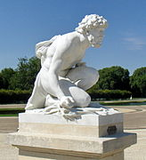
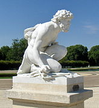

MİTOLOJİ
Roma mitolojisi, Antik Roma'da yaşayan insanların mitolojik inançlarının bütününe verilen isimdir. Genelde iki ana bölümü olduğu düşünülür; ilk bölüm ki daha sonraları etkin olmuştur ve edebidir, genellikle Etrüsk mitolojisindeki öğelerin Romalılaştırılmış hallerinden meydana gelir, ikinci bölüm ise daha erken dönemlerde etkin olmuş olan ve daha çok kültik olan farklı uygulama ve inançlara sahip daha özerk bir bölümdü
Romalıların hayatında dinin büyük bir önemi vardı. Latince'de "din" anlamına gelen religio sözcüğünün religare yani "bağlamak" fiiliyle olan yakınlığı bazı bilim insanlarına göre önemlidir. Her ne kadar söz konusu fiile yakın olsa da religio sözcüğü çok geniş bir anlam yelpazesine sahipti ve onun birebir karşılığı bir sözcük o dönemin ünlü dillerinde, örneğin Yunanca'da, bulunmamaktaydı. Nitekim daha sonraları hem Roman hem de Cermen kökenli diller bu sözcüğün karşılığı ile din anlamını tanımlamak yerine yine bu sözcüğü kullanmayı tercih etmiştir; religion veya religione gibi.[1]
Roma tarihi ve halkın günlük yaşamı için dinin önemi Livy'nin tarihinde de görülebilir. Roma tarihine dair neredeyse her türlü olgu, yükselişlerden çöküşlere kadar, rahatlıkla dine bağlanarak açıklanabilmekteydi. Sonuçta ilk dönem Roma dininde neredeyse her olay için bir tanrı veya tanrıça bulunması da bunun göstergelerinden sayılabilir.
Romalıların dini anlayışının gelişmişliğine rağmen cumhuriyetin sonuna kadar dini tanımlanabilecek fikirler yazına dökülmedi. Etrüsk kültürünün Roma'da yoğun biçimde etkili olmaya başlamasıyla yazar ve düşünürler dini konulardaki şahsi fikirlerini yazına dökmüşlerdir. Örnek olarak Cicero verilebilir.
Bunun nedeni dinin karakteristiki yapısı da olabilir. Her ne kadar bugün Roma dini olarak tanımlansa da o dönemdeki din tanımı bugünkü sistematik ve belirli başlıkları içinde bulunduran din tanımından çok farklıydı. Roma dini hiçbir zaman modern din anlayışına sahip olamamıştır. Gerek erken dönemlerindeki kültik yapısı gerekse sonraları yaşanan başta Etrüsk olmak üzere farklı kültür ve milletlerin dini yapılarının etkileşimi sistematik bir din oluşturamamıştır. Sınırları muğlak, kuralları esnekti. Her ne kadar bir tür ruhban sınıfı (rahip ve rahibeler), ilahilik gibi kavram ve kurumlar yer alsa da bunların hepsi sistematik bir biçimde bütün oluşturmamaktaydı. Zaten sonraki dönemlerde farklı kültürlerden gelen dini öğeler ile dini yapı çok farklı bir hâl almıştır.
Bazı Önemli Roma Tanrıları
jupiter
merkür
cupid
ceres
plüton


 
